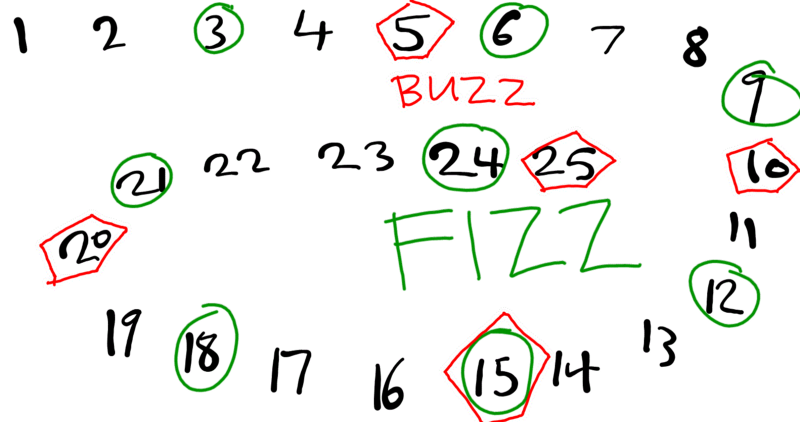

Niveau de difficultée : Facile & Moyen
Exercice 1 : QCM Bac 2019 - Déclarations & Suites
🟢 FacileQuestion 1
Soit l'algorithme suivant :
Début Inconnu
Lire(c1) ; Lire(c2)
c3 ← 0
Pour i de 0 à Long(c2) - 1 Faire
Si Majus(c2[i]) = Majus(c1) Alors
c3 ← c3 + 1
Fin Si
Fin Pour
Ecrire(c3)
FinCi-dessous des extraits de propositions de tableaux de déclaration des objets utilisés. La déclaration correspondante à l'algorithme Inconnu est :
| Objet | Type |
|---|---|
| c1 | chaîne |
| c2 | chaîne |
| c3 | entier |
| Objet | Type |
|---|---|
| c1 | caractère |
| c2 | caractère |
| c3 | entier |
| Objet | Type |
|---|---|
| c1 | chaîne |
| c2 | caractère |
| c3 | réel |
| Objet | Type |
|---|---|
| c1 | caractère |
| c2 | chaîne |
| c3 | entier |
Quel est la bonne proposition ?
- Proposition 1
- Proposition 2
- Proposition 3
- Proposition 4
Question 2
Afin d'améliorer le message d'affichage du résultat de l'algorithme précédent et de le rendre significatif relativement au traitement effectué, l'instruction 4 sera remplacée par l'instruction suivante :
- Ecrire("Le nombre de caractères majuscules de", c1, "et", c2, "est :", c3)
- Ecrire("Le nombre d'occurrences de", c1, "dans", c2, "est :", c3)
- Ecrire("Le nombre de chiffres dans", c2, "est :", c3)
- Ecrire("Le nombre de caractères communs entre", c1, "dans", c2, "est :", c3)
Question 3
Soit la suite définie par :
- U 0 = 1
- U n = 1 + 1/U n-1 , pour tout n > 0
La séquence qui permet de déterminer le terme U n avec n ≥ 0 est :
T[1] ← 1
Pour i de 2 à n+1 Faire
T[i] ← 1 + 1/T[i-1]
Fin Pour
Un ← T[n+1]U0 ← 1
Pour i de 1 à n Faire
Un ← 1 + 1/U0
Fin PourUn ← 1
Pour i de 1 à n Faire
Un ← 1 + 1/Un
Fin PourU0 ← 1
Pour i de 1 à n Faire
Un ← 1 + 1/U0
U0 ← Un
Fin Pour
Un ← U0Quel est la bonne proposition ?
- Proposition 1
- Proposition 2
- Proposition 3
- Proposition 4
Indice :
Repérer les opérations appliquées sur les variables (ex:
c2[i]
indique que
c2
est une chaîne et
c1
un caractère comparé). Pour les suites,
vérifier comment le terme précédent est mis à jour à chaque itération.
Exercice 2 : Le jeu du FizzBuzz
🟢 FacileLe « FizzBuzz » est à l’origine un jeu pour apprendre aux enfants le principe de la division. Les enfants doivent énoncer les chiffres dans l’ordre et remplacer le nombre par « Fizz » s’il est divisible par 3 ou « Buzz » s’il est divisible par 5.

Ecrire un programme qui simule ce jeu jusqu'à 50.
Indice : Utiliser une boucle pour parcourir les nombres de 1 à 50. Penser à tester d'abord la condition double (divisible par 3 ET 5) avant de tester les conditions simples (divisible par 3, puis divisible par 5).
Exercice 3 : Moyenne arithmétique de n nombres
🟢 FacileEcrire un programme qui calcule et affiche la moyenne de n entiers (2 ≤ n ≤ 10) saisis au clavier (sans utiliser de tableau).
Exemple de simulation
Indice :
Contrôler la saisie de
n
entre 2 et 10. Accumuler les valeurs lues
dans une variable
somme
à l'aide d'une boucle
Pour
, puis calculer la moyenne
arithmétique.
Exercice 4 : Recherche de la meilleure note
🟢 FacileEcrire un programme qui saisit les notes des n élèves d'une classe (3 ≤ n ≤ 30) dans un tableau t, puis calcule et affiche la note maximale de la classe.
Exemple de simulation
Indice :
Initialiser
max ← t[0]
puis parcourir le tableau avec
Pour i de 1 à n-1
. Si
t[i] > max
, mettre à jour
max ← t[i]
.
Exercice 5 : Moyenne arithmétique avec condition d'arrêt
🟡 MoyenEcrire un programme qui calcule et affiche la moyenne des entiers saisis au clavier (sans utiliser de tableau).
Le programme s'arrête lorsque l'utilisateur tape le nombre 0 .
Exemple de simulation
Indice :
Le nombre de valeurs n'est pas connu à l'avance. Utiliser une boucle
Répéter
ou
TantQue
pour lire les valeurs et maintenir un compteur
nb
d'éléments valides non nuls.
Exercice 6 : Comptage des chiffres d'un nombre (Bac 2019)
🟡 MoyenSoit la séquence algorithmique suivante, où x est un entier naturel :
nb ← 1
TantQue (x div 10) ≠ 0 Faire
nb ← nb + 1
x ← x div 10
Fin TantQueTravail demandé
-
Calculer la valeur finale de
nb
pour les valeurs suivantes de
x
:
- 5403
- 176
- 3
- Donner le rôle de cette séquence.
- Ecrire une séquence algorithmique équivalente à celle donnée précédemment sans utiliser une structure itérative.
Indice :
À chaque itération de la boucle
TantQue
, la division entière
x div 10
enlève le dernier chiffre du nombre
x
. Pour la version sans boucle,
réfléchir au lien entre le nombre de chiffres d'un entier et sa représentation sous forme de chaîne de
caractères.
Exercice 7 : Test de primalité d'un nombre
🟡 MoyenEcrire un programme qui lit un entier n (n ≥ 0), puis affiche s'il est premier ou non.
Un nombre est dit premier s'il est divisible uniquement par lui-même et par 1.
Exemple de simulation
Indice :
Tester s'il existe au moins un diviseur de
n
dans l'intervalle
[2, n div 2]
. Si aucun diviseur n'est trouvé et
n > 1
, le nombre est premier.
Exercice 8 : Identification des chiffres d'un nombre
🟡 MoyenÉcrire un programme qui détermine quels sont les chiffres utilisés dans la représentation d'un nombre n (n > 0) donné.
Exemple de simulation
Indice : Extraire chaque chiffre du nombre n via
chiffre ← n mod 10 et n ← n div 10 tant que n ≠ 0, ou
convertir le nombre en chaîne pour trier ses caractères uniques.
Exercice 9 : Lettres communes et spécifiques à deux mots
🟡 MoyenÉcrire un programme qui saisit deux mots puis détermine les lettres communes et les lettres spécifiques à chaque mot.
Les lettres communes sont vertes , et les lettres spécifiques sont rouges
s a m i - s a hb i
Exemple de simulation
Indice :
Parcourir les caractères uniques du premier mot et vérifier s'ils figurent dans le
second mot à l'aide d'une recherche (ex:
Pos(mot1[i], mot2) ≠ -1
).
Exercice 10 : Détection du monovocalisme
🟡 MoyenUn mot ou une phrase sont dits monovocalisme en une lettre donnée s'ils incluent une seule voyelle qui se répète une ou plusieurs fois, sans distinction entre majuscules et minuscules.
Exemples :
- "C a s" est un monovocalisme en "a"
- " E st e ll e " est un monovocalisme en "e"
- "L e s R e v e n e nt e s" est un monovocalisme en "e"
- "G a rg a s P a r a c" est un monovocalisme en "a"
- "Wh a t a m a n !" est un monovocalisme en "a"
Travail demandé
Ecrire un programme qui saisit une chaîne de caractères non vide ch puis affiche s'il s'agit d'un monovocalisme en une lettre à déterminer.
Exemple de simulation
Indice : Parcourir la chaîne, collecter toutes les voyelles rencontrées dans une liste ou chaîne. S'assurer qu'au moins une voyelle est présente et qu'elles sont toutes identiques.